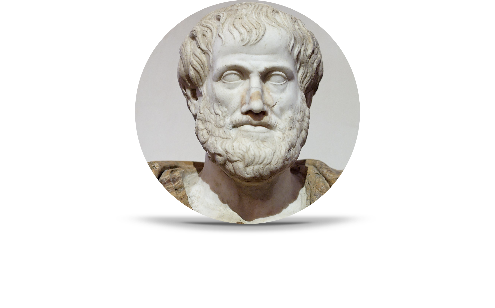

<!-- _includes/header.html -->
<header class="site-header">
    <div class="header-content">
        <!--  -->
        <h1 class="site-title"><a href="{{ '/' | relative_url }}">Cosmos in the Classroom</a></h1>
    </div>
    <nav class="site-nav">
        <ul>
            <li><a href="{{ '/' | relative_url }}">Home</a></li>
            <li><a href="{{ '/src\hphys\hphys_landing' | relative_url }}">Honors Physics</a></li>
            <li><a href="{{ '/src\sphys\sphys_overview' | relative_url }}">Standard Physics</a></li>
            <li><a href="{{ '/src\ref\ref_lib' | relative_url }}" type="button">Library</a></li>
        </ul>
    </nav>
</header>

<style>
    .site-header {
        position: absolute;
        top: 0;
        left: 0;
        z-index: 1000;
        /* background: linear-gradient(to left, #f4f1ea, #948455);
        border-bottom: 3px double #8b7355;
        border-top: 3px double #8b7355; */
        max-height: 100px;
        width: 100%;
        box-shadow: 0 0 10px rgba(0, 0, 0, 0.1);
        padding: 1rem 0;
        margin-bottom: 1rem;
        /* position: sticky; */
        .title{
            color: #2c4a3e;

        }
    }
    .header-content {
        display: flex;
        flex-direction: column;
        text-align: center;
        margin-bottom: 1rem;
        padding: 1rem;
    }
    .header-content.img {
        max-width: 20%;
        max-height: 100px;
        height: auto;
        margin: 0 auto;
        display: block;

    }

    .site-title {
        font-family: "Libre Baskerville", Georgia, serif;
        font-size: 2.5rem;
        margin: 0;
        color: #2c4a3e;
    }

    .site-title a {
        text-decoration: none;
        color: inherit;
    }

    .site-subtitle {
        font-family: "Libre Baskerville", Georgia, serif;
        font-size: 1.2rem;
        color: #695d46;
        margin: 0.5rem 0 0 0;
        font-style: italic;
    }

    .site-nav {
        position: fixed, initial;
        display: flex;
        justify-content: center;
    }

    .site-nav ul {
        list-style: none;
        padding: 0;
        margin: 0;
        display: flex;
        gap: 2rem;
    }

    .site-nav a {
        font-family: "Libre Baskerville", Georgia, serif;
        color: #e9e6e1;
        text-decoration: none;
        font-size: 1.1rem;
        transition: color 0.2s;
    }

    .site-nav a:hover {
        color: #e9ba74;
    }
</style>